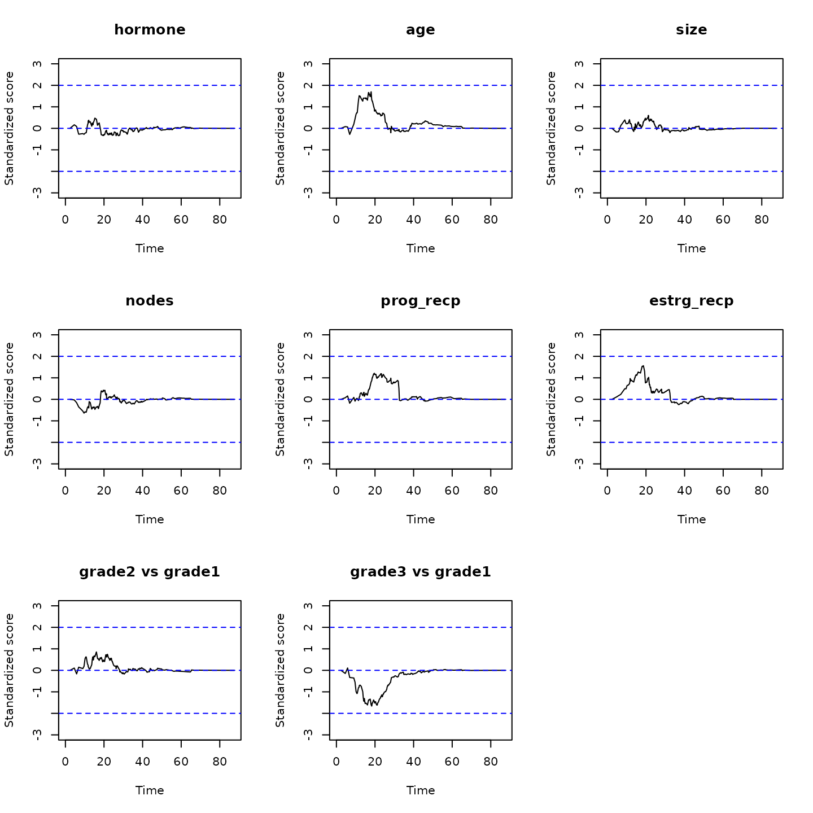

Stratified proportional win-fractions (PW) regression of composite endpoints of death and nonfatal event
Tuo Wang & Lu Mao (lmao@biostat.wisc.edu)
PW_stratify_reg.RmdThis vignette demonstrates the use of the WR package in
fitting the stratified proportional win-fractions (PW) regression model
for prioritized composite endpoints consisting of death and a nonfatal
event (Wang and Mao, 2022). This is an extension of the unstratified PW
model of Mao and Wang (2020, Biometrics).
MODEL & INFERENCE
Outcome data and modeling target
Let denote the survival time, time to the first nonfatal event like hospitalization, and a -vector of covariates. The composite outcome is , with prioritized over . Suppose that there are strata defined by, e.g., patient demographics or study center. In the th stratum , if we want to compare the th and th patients, denoted respectively using subscripts and , we can use Pocock et al.’s (2012) sequential rule with the “win indicator” defined by where . Then, the (time-dependent) covariate-specific win ratio in the th stratum is
Model specification
The stratified PW model specifies that $$\begin{equation}\tag{1} \mbox{Stratified PW:}\hspace{3mm} \mathcal R_l(t;\boldsymbol Z_{li}, \boldsymbol Z_{lj})=\exp\{\boldsymbol\beta^{\rm T}(\boldsymbol Z_{li} -\boldsymbol Z_{lj})\},\hspace{3mm} l=1,\ldots, L. \end{equation}$$ That is, we assume that the covariate-specific win ratio in each stratum is invariant to the follow-up time (proportionality of the win fractions) and depends on a common regression parameter . Under model (1), the components of can be interpreted as the log-win ratios associated with unit increases in the corresponding covariates within each stratum. Because model (1) involves only within-stratum comparisons, it does not require proportionality to hold across strata as an unstratified PW model does.
Number of strata and inference procedure
Under (1), we can obtain consistent estimates for the parameter based on censored data under the independent censoring assumption for every . There are two approaches to estimating the variance of the resulting estimator , each appropriate in a different context. When the number of strata is small, such as in the case of sex or race categories, we can apply the variance estimator of the unstratified PW model to each stratum and sum up the stratum-specific variances. We call this the type I variance estimator. When is large, such as in the case of matched pairs (so that ), each stratum need not contain enough subjects to support its own variance estimator. We instead treat the strata as basic units of observation and take a Lindeberg–Feller-type approach to quantifying the variance of the sum of the independent (but not necessarily identically distributed) units. This gives us a type II variance estimator.
BASIC SYNTAX
The input data must be in the “long format”, with an ID
vector containing unique patient-level identifiers. In addition, we need
a time vector containing the event times and a
status vector indicating the corresponding cause of the
event. The vector status should be coded as
1=death; 2=non-fatal event;
0=censoring. In the case of recurrent non-fatal events,
multiple rows with status=2 are allowed. However, by nature
of the method, only time to the first episode will be used. Finally, we
need a covariate matrix Z with the same row as
ID. Each column of Z represents a covariate.
All covariates need to be time-constant.
The main function to fit the stratified PW model is
obj<-pwreg(ID, time, status, Z, strata, fixedL=TRUE) with ID, time, status, and
Z as specified above. The optional argument
strata accepts the (categorical) stratifying variable. The
default option fixedL=TRUE requests the type I variance
estimator (under small
)
while fixedL=FALSE requests the type II variance estimator
(under large
).
The function returns an object of class pwreg with a
beta vector for
and a Var matrix for
.
Score processes to check the proportionality assumption can be computed
and plotted by
## compute the standardized score processes
score<-score.proc(obj)
## plot the computed process for the kth covariate
plot(score, k)As a rule of thumb, we consider the proportionality to be tenable if the score processes are bounded in .
AN EXAMPLE WITH THE GERMAN BREAST CANCER STUDY
We demonstrate the stratified PW regression methods using a subset of the data from the German Breast Cancer study consisting of 686 patients with primary node positive breast cancer (Sauerbrei et al., 1999).
Data preparation
The study was conducted between July 1984 to December 1989 to assess the effectiveness of hormonal treatment with tamoxifen in addition to standard chemotherapy in reducing the cancer relapse (nonfatal event) and mortality of patients.
We first load the WR package and the analysis dataset
gbc.
library(WR)
#> Error in get(paste0(generic, ".", class), envir = get_method_env()) :
#> object 'type_sum.accel' not found
head(gbc)
#> id time status hormone age menopause size grade nodes prog_recp
#> 1 1 43.83607 2 1 38 1 18 3 5 141
#> 2 1 74.81967 0 1 38 1 18 3 5 141
#> 3 2 46.55738 2 1 52 1 20 1 1 78
#> 4 2 65.77049 0 1 52 1 20 1 1 78
#> 5 3 41.93443 2 1 47 1 30 2 1 422
#> 6 3 47.73770 1 1 47 1 30 2 1 422
#> estrg_recp
#> 1 105
#> 2 105
#> 3 14
#> 4 14
#> 5 89
#> 6 89Covariates include:
-
hormone: Treatment indicator: 1=Hormone therapy; 2=standard therapy; -
ageAge at diagnosis (years) -
menopauseMenopausal Status; 1=No; 2=Yes -
gradeTumor grade, 1-3 -
nodesNumber of nodes involved -
prog_recpNumber of progesterone receptors -
estrg_recpNumber of estrogen receptors
The grade column in gbc is a factor
variable. We create dummy variables for grade.
grade_matrix <- model.matrix(~factor(grade),data=gbc)
grade_df <- as.data.frame(grade_matrix[,-1])
names(grade_df) <- c("grade2 vs grade1", "grade3 vs grade1")
gbc <- cbind.data.frame(gbc[,-8], grade_df)Stratification by menopause status
Next, we fit a PW model stratified by menopause status. Because the stratifying variable has only two levels, we use the type I variance estimator.
## extract the covariate matrix Z from the data
## leaving out menopause as the stratifying variable
Z1 <- as.matrix(gbc[,c("hormone", "age", "size", "nodes", "prog_recp",
"estrg_recp", "grade2 vs grade1", "grade3 vs grade1")])
## fit a PW model stratified by the binary menopause status
## use type I variance estimator
obj1<-pwreg(ID=gbc$id,time=gbc$time,status=gbc$status, Z=Z1,strata=gbc$menopause,fixedL=TRUE)
## print out the results
print(obj1)
#> Call:
#> pwreg(ID = gbc$id, time = gbc$time, status = gbc$status, Z = Z1,
#> strata = gbc$menopause, fixedL = TRUE)
#>
#> Stratified proportional win-fractions regression analysis
#>
#> (Wang and Mao, 2021+):
#>
#> Total number of strata: 2
#> Newton-Raphson algorithm converged in 6 iterations.
#>
#> Overall test: chisq test with 8 degrees of freedom;
#> Wald statistic 96 with p-value 0
#>
#> Estimates for Regression parameters:
#> Estimate se z.value p.value
#> hormone 4.2232e-01 1.4207e-01 2.9726 0.002953 **
#> age 1.2849e-02 9.9410e-03 1.2925 0.196175
#> size -1.0653e-02 4.6504e-03 -2.2909 0.021971 *
#> nodes -8.0716e-02 1.5057e-02 -5.3607 8.288e-08 ***
#> prog_recp 2.4843e-03 6.1486e-04 4.0404 5.337e-05 ***
#> estrg_recp -6.8751e-05 5.1367e-04 -0.1338 0.893527
#> grade2 vs grade1 -6.5226e-01 2.5633e-01 -2.5447 0.010938 *
#> grade3 vs grade1 -8.5797e-01 2.8480e-01 -3.0126 0.002590 **
#> ---
#> Signif. codes: 0 '***' 0.001 '**' 0.01 '*' 0.05 '.' 0.1 ' ' 1
#>
#>
#> Point and interval estimates for the win ratios:
#> Win Ratio 95% lower CL 95% higher CL
#> hormone 1.5254939 1.1547326 2.0152991
#> age 1.0129319 0.9933870 1.0328614
#> size 0.9894031 0.9804261 0.9984623
#> nodes 0.9224554 0.8956306 0.9500837
#> prog_recp 1.0024873 1.0012800 1.0036962
#> estrg_recp 0.9999313 0.9989250 1.0009385
#> grade2 vs grade1 0.5208648 0.3151662 0.8608161
#> grade3 vs grade1 0.4240199 0.2426418 0.7409807We can see that, adjusting for other variables and stratifying by menopause status, hormonal treatment makes the patient 1.5 times as likely to have a more favorable outcome (prioritizing survival over cancer relapse), with 95% confidence interval (1.2, 2.0) and -value 0.003. Next, plot the standardized score process for each covariate:
score1 <- score.proc(obj1)
oldpar <- par(mfrow = par("mfrow"))
par(mfrow = c(3,3))
for(i in c(1:8)){
plot(score1, k = i)
abline(h = 0, col="blue",lty=2)
abline(h = -2, col="blue",lty=2)
abline(h = 2, col="blue",lty=2)
}
par(oldpar) All curves are bounded between -2 and 2, suggesting no severe violation of the proportionality assumption.
Stratification by age
As illustration, we fit another PW model stratified by finely-cut age groups.
## cut age into ~30 groups by quantiles
cutpoints <- c(0,unique(quantile(gbc$age[gbc$status<2],
seq(0.1,1,by=0.02))),Inf)
cutpoints
#> [1] 0.0 40.0 41.2 43.0 44.0 45.0 46.0 47.0 48.0 49.0 50.0 51.0 52.0 53.0 54.0
#> [16] 55.0 56.0 57.0 58.0 59.0 60.0 61.0 62.0 63.0 64.0 65.0 66.0 67.0 69.0 71.0
#> [31] 80.0 Inf
age_group <- cut(gbc$age, breaks = cutpoints, right = FALSE)Now that , it would be better to use type II variance estimator for inference.
## extract the covariate matrix Z from the data
## leaving out age as the stratifying variable
Z2 <- as.matrix(gbc[,c("hormone", "menopause", "size", "nodes", "prog_recp",
"estrg_recp", "grade2 vs grade1", "grade3 vs grade1")])
## fit a PW model stratified by the binary menopause status
## use type II variance estimator because L is large
obj2<-pwreg(ID=gbc$id,time=gbc$time,status=gbc$status, Z=Z2,strata=age_group,fixedL=TRUE)
## print out the results
print(obj2)
#> Call:
#> pwreg(ID = gbc$id, time = gbc$time, status = gbc$status, Z = Z2,
#> strata = age_group, fixedL = TRUE)
#>
#> Stratified proportional win-fractions regression analysis
#>
#> (Wang and Mao, 2021+):
#>
#> Total number of strata: 31
#> Newton-Raphson algorithm converged in 6 iterations.
#>
#> Overall test: chisq test with 8 degrees of freedom;
#> Wald statistic 75.4 with p-value 4.168887e-13
#>
#> Estimates for Regression parameters:
#> Estimate se z.value p.value
#> hormone 4.8641e-01 1.5611e-01 3.1158 0.0018346 **
#> menopause -2.1619e-02 2.7309e-01 -0.0792 0.9369026
#> size -1.1571e-02 5.0177e-03 -2.3060 0.0211088 *
#> nodes -7.5957e-02 1.7082e-02 -4.4466 8.724e-06 ***
#> prog_recp 2.3739e-03 6.4165e-04 3.6996 0.0002159 ***
#> estrg_recp -6.9157e-05 6.0552e-04 -0.1142 0.9090710
#> grade2 vs grade1 -6.3031e-01 2.9273e-01 -2.1532 0.0313009 *
#> grade3 vs grade1 -8.0426e-01 3.2323e-01 -2.4882 0.0128400 *
#> ---
#> Signif. codes: 0 '***' 0.001 '**' 0.01 '*' 0.05 '.' 0.1 ' ' 1
#>
#>
#> Point and interval estimates for the win ratios:
#> Win Ratio 95% lower CL 95% higher CL
#> hormone 1.6264589 1.1977373 2.2086384
#> menopause 0.9786135 0.5730061 1.6713335
#> size 0.9884957 0.9788219 0.9982650
#> nodes 0.9268558 0.8963381 0.9584125
#> prog_recp 1.0023767 1.0011169 1.0036381
#> estrg_recp 0.9999308 0.9987448 1.0011183
#> grade2 vs grade1 0.5324247 0.2999756 0.9449969
#> grade3 vs grade1 0.4474189 0.2374532 0.8430446We can see that the results are similar to those of the
menopause-stratified analysis. One can also check the proportionality
assumption in a similar way using the score.proc()
function.
References
Mao, L. and Wang, T. (2020). A class of proportional win-fractions regression models for composite outcomes. Biometrics, https://doi.org/10.1111/biom.13382.
Pocock, S., Ariti, C., Collier, T., and Wang, D. (2012). The win ratio: a new approach to the analysis of composite endpoints in clinical trials based on clinical priorities. European Heart Journal, 33, 176–182.
Sauerbrei, W., Royston, P., Bojar, H., Schmoor, C., & Schumacher, M. (1999). Modelling the effects of standard prognostic factors in node-positive breast cancer. German Breast Cancer Study Group (GBSG). British Journal of Cancer, 79, 1752–1760.
Wang, T. and Mao, L. (2022). Stratified Proportional Win-fractions Regression Analysis.